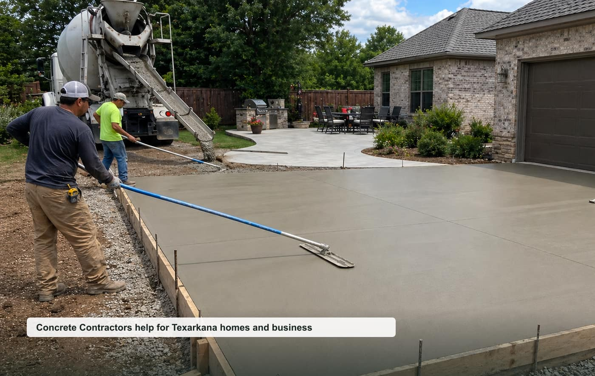

Concrete Driveways
New driveways, replacement, extensions, aprons, and parking pads.
View pageconcrete contractors Texarkana AR
A focused local quote request website for Texarkana, Miller County, and nearby communities.

Opportunity thesis
Concrete has strong average job value, dual-state metro demand, and many service-specific pages can target driveways, patios, slabs, and commercial flatwork.
The site is built around specific high-intent pages instead of one generic homepage. That makes it easier to test rankings, route leads by job type, and pitch a local business with clear ROI.
Service cluster
New driveways, replacement, extensions, aprons, and parking pads.
View pageBackyard patios, outdoor living slabs, broom finish, and stamped options.
View pageGarage slabs, shop slabs, shed pads, pole barns, and equipment pads.
View pageDecorative patios, walkways, color, texture, and sealed surfaces.
View pageSidewalks, pads, aprons, curbs, dumpster pads, and small parking areas.
View pageCracks, settlement, trip hazards, surface wear, and replacement planning.
View pageBuyer-intent pages
Homeowner-focused concrete contractors quote requests for inspections, repairs, replacements, and planned projects in Texarkana.
View pageSmall business, property manager, and light commercial concrete contractors requests around Texarkana and Miller County.
View pageUrgent concrete contractors requests where response time, safety, access, and callback speed matter.
View pageLocal search page for nearby concrete contractors requests in Texarkana, Miller County, and surrounding communities.
View pageThese pages support nearby searches without claiming fake office locations.
Repeatable model
Start with tracked calls/forms, validate ranking movement, then offer a trial to the best local provider. Keep the lead flow exclusive once paid.
Planning guides
Local questions
Cost depends on project size, urgency, access, materials, labor, and the final scope confirmed by the provider.
Response depends on provider availability, weather, job type, and whether the request is emergency or planned work.
Nearby requests may be routed for Wake Village, Nash, Fouke and surrounding Miller County communities.
Include your city, project type, rough size, visible symptoms, timeline, and the best callback number.
Request a local quote
Include the project type, rough size, city, urgency, and best callback number.
Texarkana Concrete Pros serves Texarkana, Arkansas and nearby communities.